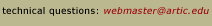

|  | ||||
 |
|
|
All related events are free with museum admission except where noted with an asterisk. For additional program information, please call the Department of Museum Education at (312) 443-3680. EXHIBITION Paris: Photographs from a Time That Was August 13–November 6, 2005 Galleries 1 and 2 Some of the greatest photographers of Paris—Eugène Atget, Jacques-Henri Lartigue, André Kertész, Brassaï, Henri Cartier-Bresson, Robert Doisneau—were hardly known when they began their most innovative work. They found Paris to be the perfect climate in which to invent and develop a new approach to conceiving the photographic image. Masterworks from these now famous visionaries form the core of a selection of 100 photographs of Paris from the 1850s to the 1950s, all of which are drawn from the impressive collection of the Art Institute of Chicago. For more information on this exhibition, click here. DAYTIME PROGRAMS Exhibition Overviews Saturday, July 30, at noon Friday, August 26, at noon Tuesday, October 4, at noon Fullerton Hall Lecture: Lautrec and the Japanese: Brothers Mark Krisco, School of the Art Institute of Chicago Tuesday, September 6, at noon Fullerton Hall Gallery Talk: Lautrec Makes a Color Lithograph Mark Pascale, associate curator Wednesday, September 14, at noon Gallery 100 Escorts for the Blind Wednesdays, August 3, 24, and 31, at 9:45 a.m. Use Columbus Drive entrance. This program is free, but registration is required. Call (312) 443-3929. *Elderhostel Day of Discovery: Toulouse-Lautrec at the Art Institute of Chicago Thursday, July 21, 9:45–3:30 Thursday, August 25, 9:45–3:30 Registration is required at www.elderhostel.org. EVENING PROGRAMS Slide-illustrated lectures by museum curatorial and education staff and visiting guest scholars Toulouse-Lautrec and Montmartre Thursday, July 14, 6:00 Rubloff Auditorium Richard Thomson, Watson Gordon Professor of Fine Arts at the University of Edinburgh The Ambivalent Glamour of Toulouse-Lautrec’s Montmartre Thursday, August 4, 6:00 Fullerton Hall Gloria Groom, David and Mary Winton Green Curator, Department of Medieval through Modern European Painting, and Modern European Sculpture Toulouse-Lautrec and the Culture of Celebrity Thursday, August 11, 6:00 Fullerton Hall Mary Weaver Chapin, assistant curator, Milwaukee Art Museum “I have two lives”: Toulouse-Lautrec’s Art as Autobiography Thursday, September 22, 6:00 Fullerton Hall Julia Bloch Frey, art historian University Night Wednesday, October 5, 5:30–8:30 Free evening event for college and university students and faculty. Avoid the normal crowds, enjoy lectures by curators and area scholars, sketch from a model in period clothing, and socialize at a coffee-bar reception. University Nights are offered twice each year. How to Attend: 1. Free, but you must register to attend. Individuals are welcome, or instructors can arrange to bring a class. Space is limited and once capacity is reached, registration will close. To register, send an e-mail to unight@artic.edu or leave a message at (312) 857-7182 with your name, e-mail address, and school that you attend. 2. On the evening of the event, enter the museum at the Columbus Drive entrance. 3. Bring your school ID to gain entrance. Only current students and faculty may attend. PERFORMANCE PROGRAMS Click here for registration information or purchase tickets online. Call (312) 575-8000 to order by phone or stop by any museum admission counter. *Dance Performance *Lecture Series Behind the Scene: Toulouse-Lautrec and Montmartre Fridays, September 23, September 30, and October 7, at 11:00 Price Auditorium For registration information, click here. Series tickets: Members, $36; Non-members, $44; Students, $28 Single-lecture tickets: Members, $4; Non-members, $6; Students, $12 Take a closer look at the work of Toulouse-Lautrec with three of the world's foremost authorities on the artist. Julia Bloch Frey, author of the definitive biography of Toulouse-Lautrec, discusses his sophisticated narrative devices. Charles Stuckey, curator of the groundbreaking 1979 exhibition of Toulouse-Lautrec's work, explores the changing perceptions of the artist and his world. Stephen Eisenman, the highly respected scholar of the art of 19th-century France, examines the complex relationship between Toulouse-Lautrec's creative genius and the emergence of modern popular culture. Henri de Toulouse-Lautrec, Storyteller Friday, September 23, 11:00 Julia Bloch Frey, art historian Toulouse-Lautrec: Then and Now Friday, September 30, 11:00 Charles Stuckey, School of the Art Institute of Chicago Mass Culture or Mass Deception? Friday, October 7, 11:00 Stephen Eisenman, Northwestern University *Drawing Classes Lautrec’s Model in Motion: Jane Avril Saturdays, July 23, 30, August 13 11:30–1:00, Morton Auditorium Tickets: Members and Students, $10; Non-members, $15 Classes include slide reviews of selected works by Lautrec and drawing lessons with a costumed model. *Reading Course Julia Bloch Frey’s “Toulouse-Lautrec: A Life” Thursdays, September 8, 15, 22 5:30–7:00, Morton Auditorium Tickets: Members and Students, $20; Non-Members, $25 Trace the life and times of Lautrec in this biography. Discuss his experiences in Montmartre café-concert halls, where his evenings with performers like La Goulue, Jane Avril, and Loïe Fuller found their way into the history of art. Books are available in the Museum Shop. VIDEO SCREENINGS Toulouse-Lautrec and Montmartre Saturdays, through September 24, at 11:00 August 6, 20, Sept. 3, 2: Price Auditorium August 13, 27, Sept 10, 17: Fullerton Hall This 35-minute film, produced for the exhibition by the National Gallery of Art, Washington, provides an overview of the relationship between Henri de Toulouse-Lautrec and Montmartre's avant-garde culture using works of art, archival film footage, and commentary by contemporary scholars. FAMILY PROGRAMS All family programs take place in the Kraft Education Center on the ground level. The Artist�s Studio All ages are invited to participate in art activities inspired by objects in the museum. “Under the Big Top” Mural Tuesdays in July, 11:00–3:00 Fridays, Saturdays, and Sundays in July, 11:00–2:00 Shadow Puppets Tuesdays in July, 11:00–3:00 Fridays, Saturdays, and Sundays in July, 11:00–2:00 (except July 1, 2, and 3) Draw from a Model Tuesdays in August, 11:00–2:00 Printed Posters Tuesdays in August, 11:00–3:00 Saturdays and Sundays in August, 11:00–2:00 Gallery Walks On these 30-minute, interactive tours, see the art of entertainment from different times and places. Ages 6 & up All the World’s a Stage Tuesdays in July and August, 11:30 or 1:30 Fridays, Saturdays, and Sundays in July at 11:30 (except July 1, 2, and 3) Special *Circus Parade: A Family Art Camp Monday–Friday, August 8–12, 9:00–12:30 Ages 6–12 with an adult companion Family Art Camp draws extensively on the Art Institute’s world-class art collection, with daily gallery visits to explore paintings, prints, and sculpture related to the theme of the circus, including the special exhibition Toulouse-Lautrec and Montmartre. Daily studio sessions are held at the School of the Art Institute’s Columbus Drive Building, adjacent to the Art Institute’s Columbus Drive entrance. This program will be led jointly by an Art Institute educator and a studio arts teacher from the School of the Art Institute. For more information about tuition and registration, call (312) 899-5130, email artcamp@artic.edu, or visit www.artic.edu/saic/mac. TEACHER PROGRAMS *Workshop Art on Stage: Toulouse-Lautrec Wednesday, August 3, 9:30–3:30 Fee: $50; 5 CPDUs The visual and performing arts are both means of communication. In this workshop, these two art forms merge. In the morning, teachers see the exhibition Toulouse-Lautrec and Montmartre, which focuses on this Postimpressionist painter’s portrayal of the entertainers of his day. Using these artworks for inspiration in the afternoon, teachers work with educators from a Chicago theater group and learn how the performing arts can enhance their students’ skills in communication, teamwork, and creative problem solving. Meets state goals in Language Arts, Social Science, Fine Arts, and Social/Emotional Learning. To register, click here. TOURS FOR STUDENTS Tickets for teacher led groups are available Monday through Thursday at 11:00, 11:30, 12:00 and 12:30, from July 18 through October 6. There is a maximum of 70 students per ticket time. Illinois group tickets are free of charge with a $15 surcharge per order. Out of state groups pay $15 per ticket plus a $45 surcharge per order. To schedule a student tour click here. For further information, please call (312) 443-3679. MEMBER EVENTS Become a member! Friday, July 15, at noon Members get a rare opportunity to view special exhibitions in advance of the public. Present your membership card to attend Member Preview Days. |
| Last updated: August 2005. Best viewed with Netscape Navigator 4.0 or higher. Reproduction Permission. Copyright © 2005. All rights reserved. |